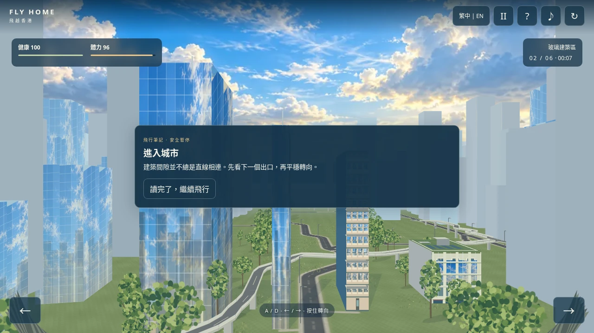
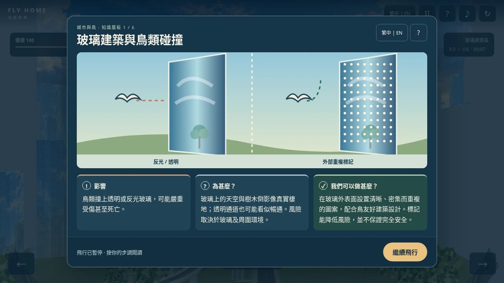
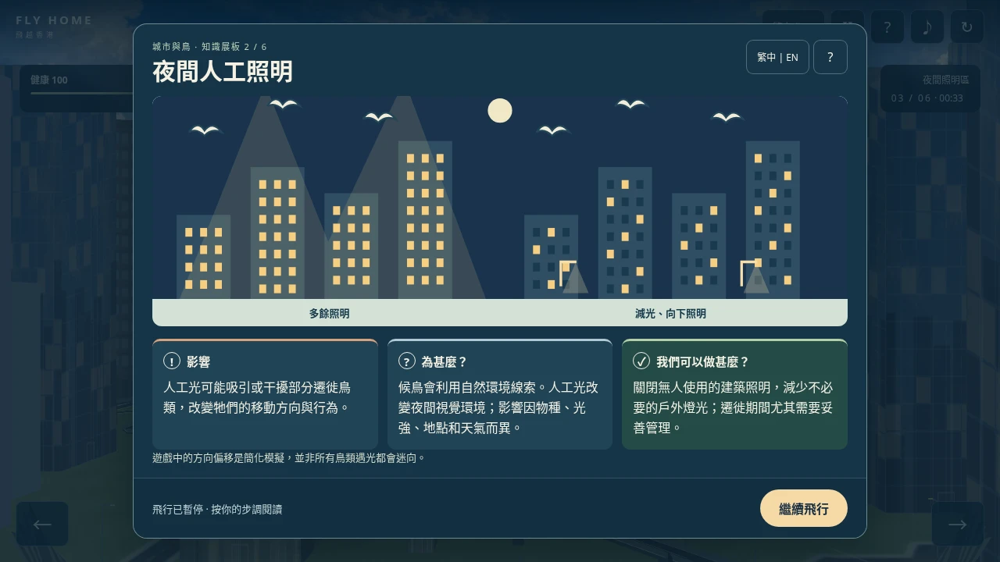
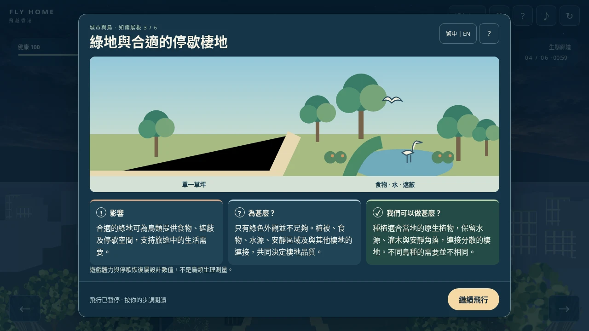
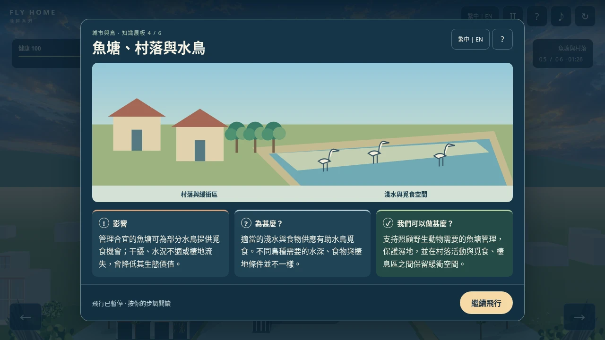
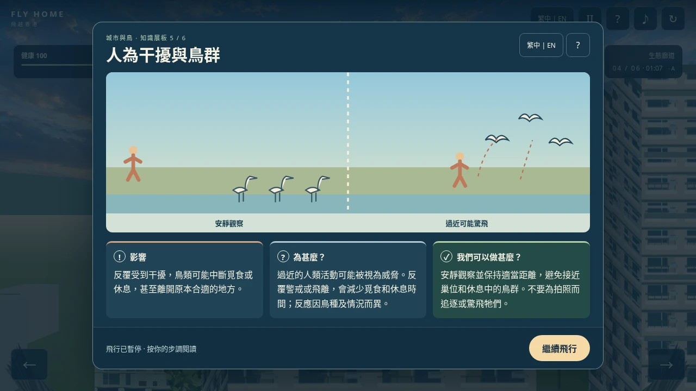
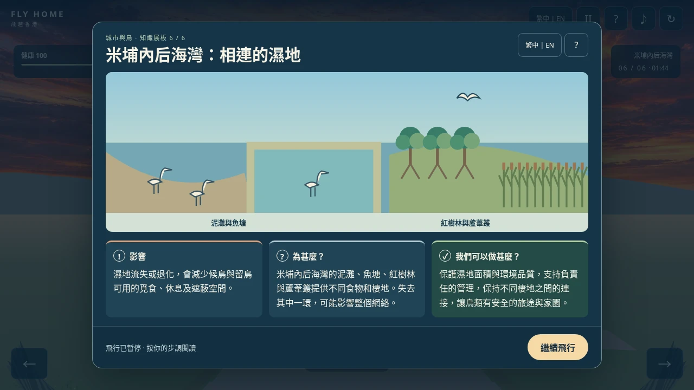
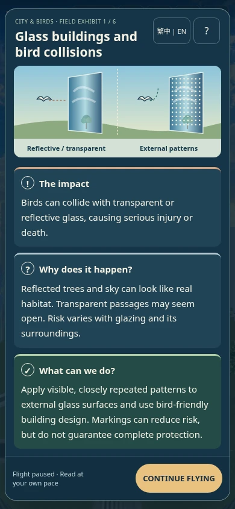
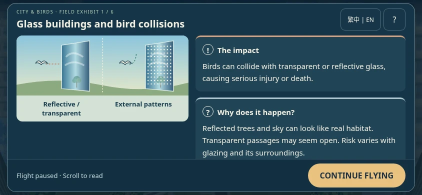

Fly Home · 六主题图文展板与香港保育知识总结
开始试玩 · 自包含离线版 · 完整测试报告 · 来源核验记录
三份指定 HKBWS 原始来源均被本环境网络代理阻断，未取得原文。本版按需求省略未核实统计数字，并保留实际来源链接及公民科学说明。没有使用实体手机；线上页面未实际验证。
每个主题都有解释性原创插图、影响、原因及解决办法。英文主体 56～63 词；繁体中文同步。弹窗冻结真实游戏状态，玩家自行继续。碰撞和接近触发共用去重队列，绕过停歇点或特定场景也不会漏掉知识。现有城市画面、操控、路线、资源和重聚结尾保留。
同一城市入口与桌面尺寸。新版不再把主知识卡写成选路操作提示。







中英文内容等量保留，手机不会被替换成一两句短提示。知识卡可切换语言和打开帮助，暂停返回后保留当前展板。


总结截图使用受控已读状态检查排版；真实完整旅程已另行测试。截图为浏览器原尺寸 PNG 的 WebP 导出（质量 90，无缩放）。
桌面 1280×720、竖屏 390×844、横屏 844×390，各完成 A/B/C。每条旅程六主题均只显示一次；模拟阅读 10 秒，状态和世界像素完全不变。实际页面以真实 RAF 阅读 7 秒，无自动关闭，键盘/触屏选择路线正常；横屏另测离线版。
| 路线 | 生命 | 剩余体力 | 飞行用时（不含阅读） |
|---|---|---|---|
| A | 100 | 15.745 | 144.92 秒 |
| B | 100 | 42.745 | 144.92 秒 |
| C | 100 | 45.803 | 152.22 秒 |
与本轮修改前一致，数值属于游戏设计，不是科学测量。
model.json · browser.json · live.json · summary.json · preservation.json
此外覆盖碰撞优先、致命碰撞、重复触发、跳过场景兜底、暂停/帮助/双语、成功/失败、跳过动画与重新开始。渲染器源代码与基线完全相同。
尚无实体手机或学生用户研究。HKBWS 统计原文未能核实，因此本版不展示数字卡；未来必须核对原报告的范围、时期、方法和数字后再启用。当前网络限制也阻止 GitHub Pages 线上核验，推送成功不能视为线上实测。